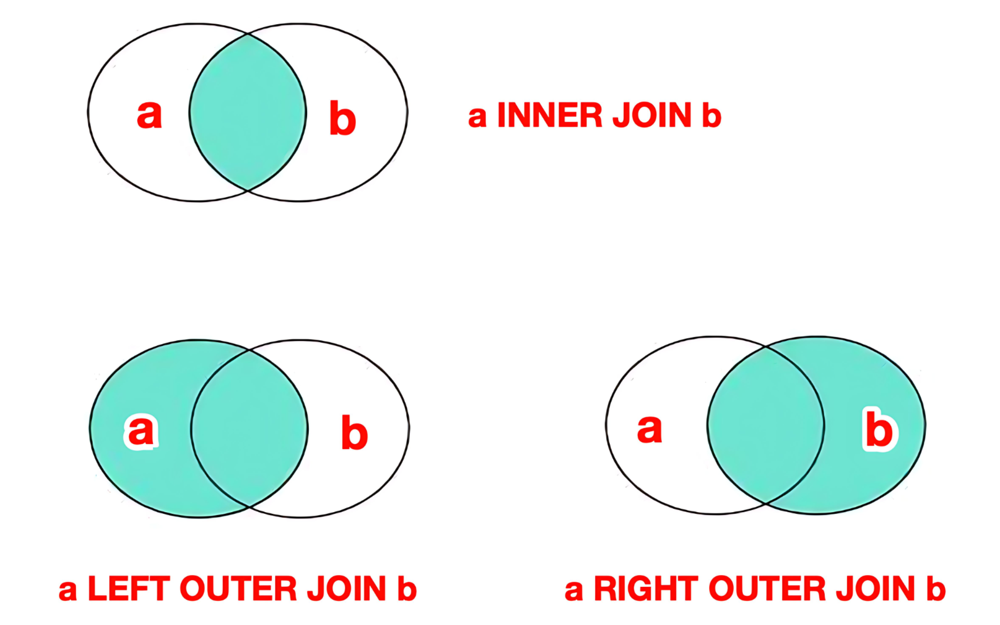

MySQL基础
1 数据定义语言DDL
Data Definition Language：数据定义语言，用来定义数据库对象(数据库，表，字段)。
1.1 库操作
创建数据库：
1 | |
显示所有库：
1 | |
使用指定数据库：
1 | |
删除指定数据库：
1 | |
1.2 表操作
1.2.1 创建表
1 | |
常用主键自增 AUTO_INCREMENT。
- 常用数据类型：
- 整数：
INT - 字符串：
VARCHAR(长度) - 小数：
DECIMAL(总位数, 小数位) - 时间：
DATETIME
- 整数：
- 常用约束
- 主键：
PRIMARY KEY - 非空：
NOT NULL - 唯一：
UNIQUE - 默认：
DEFAULT - 外键：
FOREIGN KEY（影响效率）
- 主键：
1.2.2 查询表
1 | |
1.2.3 修改表
增加字段：
1 | |
删除字段：
1 | |
修改字段类型：
1 | |
修改字段名和类型：
1 | |
修改表名：
1 | |
1.2.4 删除表
删除整个表结构：
1 | |
删除数据保留表结构：
1 | |
2 数据操作语言DML
Data Manipulation Language：数据操作语言，用来对数据库中表的数据记录进行增、删、改操作。
2.1 增加INSERT
向指定字段添加数据：
1 | |
全部字段添加数据：
1 | |
批量添加数据（指定字段）：
1 | |
批量添加数据（全部字段）：
1 | |
2.2 删除DELETE
1 | |
2.3 修改UPDATE
1 | |
3 数据查询语言DQL
Data Query Language：数据查询语言，用来查询数据库表中的记录。
1 | |
FROM加载数据WHERE对加载后的数据进行筛选GROUP BY对筛选后的数据进行分组HAVING对分组后的数据进行筛选SELECT返回要查询的字段ORDER BY对结果进行排序LIMIT限制返回结果
3.1 基础查询
通用格式：
1 | |
查询所有字段：
1 | |
查询结果去重：
1 | |
- 比较运算符
><>=<===!=都和Python相同，另有不同的有如下：字段 BETWEEN 最小值 AND 最大值：在最小值和最大值范围内即可字段 IN (值1, 值2...)：在()内满足任意即可字段 LIKE "占位符"：模糊查询，可以用_代表一个字符，%代表任意个字符IS NULL：判空专用
- 逻辑运算符：
ANDORNOT
3.2 聚合查询
前面的查询都是横向查询，根据条件一行一行的进行判断。 聚合函数查询是纵向查询，它将一列数据作为一个整体，进行纵向计算，然后返回一个结果值。
1 | |
COUNT(*)：按照列统计数量MAX()：按照列计算最大值MIN()：按照列计算最小值AVG()：按照列计算平均值SUM()：按照列计算数值和
3.3 分组查询
按列进行分类，把相同的数据归为一类，然后可以对分类完的数据进行合并计算。
通常和聚合函数联合使用：
- 先分组：把表数据按照指定列的值进行划分，值相同的数据划分到同一个组
- 再聚合：分别针对每一组数据使用聚合函数进行统计
1 | |
WHERE与 HAVING区别：
- 执行时机不同：
WHERE是分组之前进行过滤，不满足WHERE条件，不参与分组HAVING是分组之后对结果进行过滤
- 判断条件不同：
WHERE不能对聚合函数进行判断HAVING可以对聚合函数进行判断
3.4 排序查询
1 | |
排序方式： ASC：升序（默认值）
DESC：降序
3.5 分页查询
1 | |
4 多表查询
多表查询
SELECT 字段 FROM 表1, 表2会产生笛卡尔积，也就是两个表的所有组合情况。要想消除笛卡尔积，只需要给多表查询加上连接查询的条件即可。
4.1 连接查询
4.1.1 内连接
隐式内连接：
1 | |
显式内连接：
1 | |
内连接只能返回两个表中都存在匹配的行。
4.1.2 外连接
左外连接：
1 | |
左外连接是以左表为中心，返回左表所有行，以及右表匹配的行。即使右表没有匹配，则对应列显示
NULL。
右外连接：
1 | |
右外连接是以右表为中心，返回右表所有行，以及左表匹配的行。即使左表没有匹配，则对应列显示
NULL。 
4.1.3 全连接
全连接
FULL OUTER JOIN是取两个表的并集，MySQL本身并不支持全连接，但可以借助
UNION实现。
UNION合并，并且去重
1 | |
UNION ALL合并但不去重
1 | |
在多表连接中，如果两个表的连接字段名相同，可以不使用
ON a.id = b.id，而使用更简洁的USING(id)代替。
4.2 子查询
将查询的结果作为外部查询的条件、字段或表来使用，称为嵌套查询，又称子查询。子查询用来提供值、集合或表给外查询作比较或进一步处理。
4.2.1 常见分类
- 相关子查询（Correlated Subquery）
- 子查询内部引用外查询的列，子查询需要对外查询的每一行重新计算，每行执行效率较低
- 非相关子查询（Non-correlated）
- 子查询独立于外查询，单独执行一次得到结果，外查询再使用该结果
- 按返回结果类型
- 标量子查询（Scalar）：返回单个值（单行单列）。可用于
= (子查询)、SELECT (子查询)等场景，若返回多行则报错 - 单行多列子查询：返回一行，通常用
(a, b) = (SELECT x, y ...)方式比较 - 多行单列子查询：返回多行，通常用
IN、ANY、SOME、EXISTS - 多行多列子查询：返回多行多列，用
(a, b) IN (SELECT x, y ...)方式比较，或当做派生表处理
- 标量子查询（Scalar）：返回单个值（单行单列）。可用于
4.2.2 常用关键字
IN：判断一个值是否在集合里salary IN (SELECT salary FROM …)
EXISTS：判断是否存在至少一行结果EXISTS (SELECT 1 FROM …)
ANY/SOME：和集合中至少一个值比较salary > ANY (SELECT salary FROM …)
ALL：和集合中所有值比较salary > ALL (SELECT salary FROM …)
NOT IN与NULL会导致结果为空集，常用NOT EXISTS来代替NOT IN。
4.2.3 示例
标量子查询： 子查询只返回一个值。
1 | |
1 | |
多行多列子查询： 子查询返回多行多列数据，通常需要与
IN搭配使用。
1 | |
派生表： 子查询结果作为派生表使用，通常需要起别名。
1 | |
5 开窗函数
MySQL 窗口函数（Window Functions）是 MySQL 8.0
引入的一项强大功能，窗口函数的作用类似于聚合函数，但它并不会像
GROUP BY
那样把多行聚合成一行，它会在原有表基础上，为每一行添加一个新列，返回计算结果。
PARTITION BY：将查询结果分成若干个独立的窗口（分区），窗口函数会分别在每个分区上进行计算，类似于GROUP BY，但它不合并行。ORDER BY：确定窗口内的顺序，对排名 / 偏移函数非常重要。
1 | |
每加一个开窗函数，就可以在原有表基础上新增一列，具体取决于选用什么函数。
- 排名函数
ROW_NUMBER()：为分区的每一行分配一个唯一的连续整数。1 2 3 4RANK()：为分区每一行分配排名，有相同排名，但会跳过后续排名。 1 2 2 4DENSE_RANK()：为分区每一行分配排名，有相同排名且连续。1 2 2 3
- 分析/位移函数
LAG(expr, N)：返回当前行前面第N行的expr值，比如计算销售额与前N天的差异。LEAD(expr, N)：返回当前行后面第N行的expr值，比如计算销售额与后N天的差异。FIRST_VALUE(expr)：返回窗口框架中第一行的expr值，比如找出每个部门的最高薪水。LAST_VALUE(expr)：返回窗口框架中最后一行的expr值，比如找出每个部门的最低薪水。
- 聚合函数
SUM()：计算窗口内的总和AVG()：计算窗口内的平均值- …
窗口函数只能出现在 SELECT列表和
ORDER BY中（不能在
WHERE、GROUP BY、HAVING
中直接使用，因为这些子句在
SELECT之前就执行了，而窗口函数是在
SELECT阶段才计算的）。
如果需要对窗口结果做过滤，应该使用子查询或 CTE。
经典TOP-N问题：
1 | |
6 CTE
CTE（Common Table Expression，公共表表达式）就是临时结果集，可以在一个查询里先把它定义出来，在后续查询中使用。
1 | |